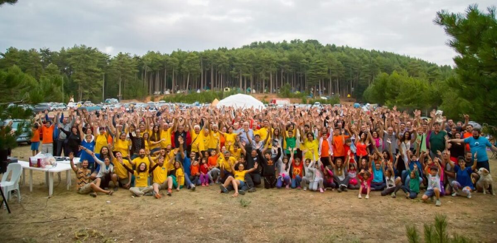

Soapbox Science Munich
Presented “Blaumeise Family Tree: A Complicated Story of DNA Decorations”, using props and visual demonstrations to introduce DNA methylation, inheritance and evolutionary biology to a public audience in central Munich.

I am an evolutionary biologist and computational genomics researcher completing a PhD at LMU Munich and the International Max Planck Research School for Biological Intelligence (IMPRS-BI). I study biological variation, with a particular interest in DNA methylation, quantitative genetics and the problem of separating biological signal from technical variation in genomic data.
Alongside research, I write and communicate science in Greek and English. My work includes long-form popular science writing, digital science communication, public outreach and teaching, covering subjects from evolution and genetics to biodiversity, astronomy and research culture.
Developing statistical approaches to quantify DNA methylation repeatability and distinguish biological variation from technical measurement variation in large-scale epigenomic datasets.
Using pedigrees of wild blue tits and large EM-seq/RRBS datasets to investigate whether DNA methylation can be modelled as a quantitative trait and to estimate its heritable component.
Analysed transcriptomic and proteomic responses to BNT162b2 vaccination across healthy, elderly and Multiple Myeloma cohorts.
Studied genetic variation and signatures of selection around polymorphic transposable elements in rice using population-genomic analyses and an open-source workflow.
Selected long-form writing, published features and an archive of earlier science communication in Greek and English.
Explore my writing →
Presented “Blaumeise Family Tree: A Complicated Story of DNA Decorations”, using props and visual demonstrations to introduce DNA methylation, inheritance and evolutionary biology to a public audience in central Munich.


Presented biodiversity, evolutionary biology and comparative zoology to visitors through hands-on demonstrations using vertebrate specimens, skulls and other biological material.


Contributed to interactive biology activities for the general public, using demonstrations and biological material to communicate scientific concepts outside the classroom.


Participated in public observing sessions, astronomy outreach activities and amateur astronomy gatherings, including observing under the dark skies of Mount Parnon.


Participated in an international meeting devoted to evolutionary biology communication, education and the relationship between evolutionary research and society.